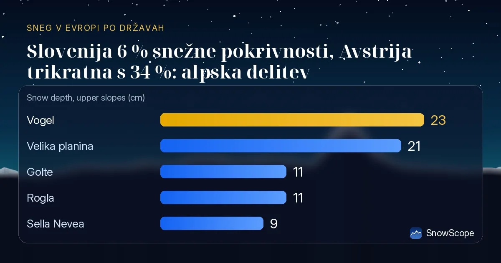

Slovenija 6 % snežne pokrivnosti, Avstrija trikratna s 34 %: alpska delitev
Delitev snega čez alpsko mejo je očitna. Avstrija ima trikrat več snežne pokrivnosti kot Slovenija ob koncu novembra, vrhovi v obeh državah pa so še vedno večinoma beli. Julijskie Alpe ponujajo Sloveniji najboljšo možnost—v treh dneh je padlo 10 cm—vendar ostaja sezona še v zametkih.
Oglejte si snežno napoved za Vogel v aplikaciji SnowScopeVišina snega, opozorila in 3D zemljevid, brezplačno.
Avstrija vodi z večjo prednostjo
Razlika odraža nadmorsko višino in smer neviht: avstrijska smučišča so na večji višini, njihove zahodne verige pa bolj neposredno lovijo sisteme s atlantsko vlago. Kaprun v Avstriji je nakopal 66 cm; Slovenija vodi z Vogelnikom na 23 cm.
Ta razlika se bo verjetno še povečala v naslednjem tednu. Avstrijska napoved vrha sega na 47 cm novega snega po državi v sedmih dneh. Slovenija v istem obdobju pričakuje le 7 cm. Orografski učinek—hori iztisnejo vlago iz zraka—favorizira višje, zahodne pobočje Avstrije in Italije nad Slovenijino nižjo tereno.
| Country | White | Deepest resort | Next 7 days |
|---|---|---|---|
| Slovenia | 6 % | Vogel | 7 cm |
| Austria | 34 % | Kaprun | 47 cm |
| Italy | 19 % | Prali | 85 cm |

Italija tudi naprej, vendar je sneg koncentriran na nadmorski višini
Italija drži 19 % snežne pokrivnosti—trikrat več kot Slovenija—njen vodilec Prali pa ima 51 cm na 2.500 m. Še bolj povedljivo je, da je italska napoved za naslednjih sedem dni kar 85 cm, najvišja v regiji. Slovenija sedi med dvema sosedama, ki bosta v naslednjih dneh prejeli bistveno več svežega snega.
Nadmorska višina je izjemno pomembna. V Sloveniji je snežna meja danes na 2.000 m. Le pas med 2.000 in 2.500 m kaže pravo nalaganje (povprečje 4 cm, pokrivnost 73 %). Pod 1.500 m se pokrivnost zmanjša na 9 % ali manj. Smučišča, ki težko dosežejo 1.700 m, bodo v novembru našla le marginalne pogoje.
Julijskie Alpe ponujajo najboljše zgodnje pogoje
V Sloveniji se Julijskie Alpe ločijo. Ta veriga je v zadnjih 72 urah prejela 10 cm—največ v državi. Vogel, julijsko smučišče na vrhu 1.731 m, drži 23 cm, najtežjo podlago v celi Sloveniji. Napoved za naslednje tri dni mu dodaja dodatnih 2 cm.
Kamniško-Savinjske Alpe na vzhodu so prejele le 3 cm v treh dneh in ne kažejo smiselnega svežega snega naprej. Nižja smučišča kot so Golte (1.570 m), Rogla (1.511 m) in Sella Nevea (kljub njeni višini 2.137 m, le 9 cm danes) zaostajajo še naprej. Za vsakogar, ki upa smučati v Sloveniji v tem tednu, so Julijskie Alpe edini realistični cilj.
Pokrivnost se je zrušila od včeraj; umik po tednu napredka
Izmerjeno snežno površino se je dramatično zmanjšala z 1.130 km² včeraj na 430 km² danes—izguba 700 km². Taljenje je bilo koncentrirano na nižjih nadmorskih višinah, kjer je novembrski sneg najtanjši in najbolj prehoden.
V preteklih sedmih dneh pa je slika manj žalostna. Snežna površina je bila le 150 km² pred tednom; danes je 430 km² predstavlja pridobitev 280 km². Zgodnja sezona je ponudila kratek akumulacijski koš, sedaj pa sledi umik. Smučarji, ki bodo prispeli ta teden, bodo srečali redko, flokasto sneg razen na visokem terenu.
Naslednja padavina prispe v četrtek; pravi test prispe naslednji teden
Petek in naprej vidijo lažji sneg (1 cm ali manj).
Večja slika se pojavi 25. novembra do 1. decembra. Tisto okno osem do štirinajst dni nosi napovedovanje do 22 cm—najbolj bistveni akumulacijski dogodek v polnem 14-dnevnem oknu. Zgodnje spuste naslednji teden se lahko počutijo redkeje kot idealno, vendar konec novembra obeta, da napolni gore. Sosednja Avstrija in Italija soočata isto odloženo časovnico, čeprav z večjo osnovno snežno pokrivnostjo.
Kaj te številke povedo
Le 13 od Slovenijini 27 smučišč poroča kaj snega danes. Vogel in Velika planina (21 cm) sledita svojim poznonovembrskim normam—dober znak za skladnost, če ne tudi obilje. Sella Nevea, najvišje smučišče na 2.137 m, je v treh dneh pridobila 4 cm in bo videla 9 cm v naslednjih treh—bolj strm navzgor trend kot nižji tekmeci.
Po regionalnem primerjanju ste približno en do dva tedna za Avstrijo in Italijo v smislenem snega. Avstrijsko visoko gorovje je že smučljivo; Slovenski visoki vrhovi bodo sledili do zgodnjega decembra. Zemljevid SnowScope prikazuje točno, katera pobočja držijo pokrivnost vsak dan.
Nasveti za smučarje
- Tarčajte Julijskie Alpe (Vogel) ali Veliko planino nad 1.600 m, če načrtujete smučati v Sloveniji ta teden. Nižja smučišča imajo premalo snega za varnost ali užitek.
- Četrtkov svež sneg bo izboljšal pogoje; pričakujte najboljše pogoje od petka do nedelje, ko se sneg zbije. Izognite se izpostavljenim nižjim pobočjem, kjer so kamen kar pod površino.
- Preden se lotite ture, preverite uradno plazovitostno bilteno; zgodnji sezonski sneg se slabo veže na tanke bazne plasti in se lahko nepričakovano zdrsne.
- Če lahko počakate do 25. novembra naprej, bodo pogoji bistveno globji in bolj stabilni. Avstrija in Italija ponujata hitrejšo akumulacijo zdaj.
- Bodite previdni za hitro taljenje, če temperature strmo narastejo v sredini tedna; novembrski sneg je moker in prehoden na nadmorski višini pod 1.800 m.
About these numbers
Resort snow depths are the deepest snow on the resort's upper slopes on the date shown; they are estimates for an area, not a measurement at one point. Forecasts can change. Always read the official avalanche bulletin before going off-piste.
Cite this report
For research, teaching or the press: the numbers and charts are free to reuse under CC BY 4.0 with this citation.
SnowScope (2026), Slovenija 6 % snežne pokrivnosti, Avstrija trikratna s 34 %: alpska delitev, https://snowscope.app/blog/sl/2026/11/slovenia-snow-report-17-november-2026.html, accessed 2026-11-17
SnowScope (Atlas Labs). (2026, November 17). Slovenija 6 % snežne pokrivnosti, Avstrija trikratna s 34 %: alpska delitev. SnowScope snow reports. https://snowscope.app/blog/sl/2026/11/slovenia-snow-report-17-november-2026.html
BibTeX
@misc{snowscope2026sloveniasnowreport17nove,
author = {{SnowScope (Atlas Labs)}},
title = {Slovenija 6 % snežne pokrivnosti, Avstrija trikratna s 34 %: alpska delitev},
year = {2026},
month = nov,
howpublished = {\url{https://snowscope.app/blog/sl/2026/11/slovenia-snow-report-17-november-2026.html}},
note = {Published 2026-11-17 12:17 UTC; accessed 2026-11-17}
}· CC BY 4.0 · Methods, data and tools →
Vogel: snow and temperature by height, this winter vs last (tools) →
Follow Vogel
Brezplačno: sporočilo, ko prihaja novi sneg, in napoved vsako jutro.